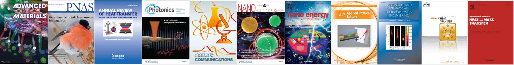

Highlights

Photon as a working fluid for heat engines
- A scalable platform for near-field thermophotovoltaics Nature Communications (2020) [PDF]
- Produces more power from low-grade waste heat using photons with a chemical potential Nano Letters (2018) [PDF]
- High-power-density near-field thermophotovoltaic Nano Energy (2017) [PDF]
- A thermal emitter helps to break the Shockley-Queisser limit International Journal of Heat and Mass Transfer (2013) [PDF]
Photonics meets electronics
- DC voltage conversion mediated by photons Nature Communications (2021) [PDF]
- An electronic circuit makes a thermal system self-sustaining Proceedings of the National Academy of Sciences (2019) [PDF]
Rewriting Kirchhoff's law of thermal radiation
- Nonreciprocity from topologically-protected material Nano Letters (2020) [PDF]
- A permanent magnet brings complete violation of Kirchhoff’s law Optics Letters (2019) [PDF]
Breaking the blackbody limit in near-field heat transfer
- Coupling of phonon and plasmon polaritons provides a strong enhancement ASME Journal of Heat Transfer (2017) [PDF]
- >10X the blackbody limit measured in doped-Si system Applied Physics Letters (2016) [PDF]
Structured order brings coherence to thermal radiation
Full List
- Zhao, B., Assawaworrarit, S., Santhanam, P., Orenstein, M., and Fan, S., "High-Performance Photonic Transformers for DC Voltage Conversion," Nature Communications Vol. 12, p. 4684 (2021). [PDF]
- Zhao, B., Song, J.H., Brongersma, M., and Fan, S., "Atomic-Scale Control of Coherent Thermal Radiation," ACS Photonics, Vol. 8, p. 872 (2021). [PDF]
- Park, Y., Asadchy, V., Zhao, B., Guo, C., Wang, J., and Fan, S., "Violating Kirchhoff's Law of Thermal Radiation in Semitransparent Structures," ACS Photonics, Vol. 8, p. 2417 (2021). [PDF]
- Zhao, B.*, Guo, C.*, Garcia, C., Narang, P., and Fan, S., "Axion-Field-Enabled Nonreciprocal Thermal Radiation in Weyl Semimetals," Nano Letters, Vol. 20, pp. 1923−1927 (2020). *Equal contribution. [PDF]
- Zhao, B.^ and Fan, S.^, “Chemical Potential of Photons and Its Implications For Controlling Radiative Heat Transfer,” Annual Review of Heat Transfer, Vol. 23, pp. 397-431 (2020). ^Corresponding author. [Invited]
- Bhatt, G.R., Zhao, B., Roberts, S., Datta, I., Mohanty, A., Lin, T., Hartmann, J., St-Gelais, R., Fan, S., and Lipson, M., "Integrated Near-Field Thermo-Photovoltaics for On-Demand Heat Recycling," Nature Communications, Vol. 11, p. 2545 (2020). [PDF]
- Guo, C., Zhao, B., Huang, D., and Fan, S., "Radiative Thermal Router Based on Tunable Magnetic Weyl Semimetals," ACS Photonics, Vol. 7, p. 3257 (2020). [PDF]
- Asadchy, V., Guo, C., Zhao, B., and Fan, S., "Sub-Wavelength Passive Optical Isolators Using Photonic Structures Based on Weyl Semimetals," Advanced Optical Materials, p.2000100 (2020). [PDF]
- Santhanam, P., Li, W., Zhao, B., Rogers, C., Gray, D., Jahelka, P., Atwater, H., and Fan, S., "Controlling the Dopant Profile for SRH Suppression at Low Current Densities in λ ≈ 1330 nm GaInAsP Light-Emitting Diodes," Applied Physics Letters, Vol. 116, p. 203503 (2020). [PDF]
- Fan, L., Guo, Y., Papadakis, G., Zhao, B., Zhao, Z., Buddhiraju, S., Orenstein, M., and Fan, S., "Nonreciprocal Radiative Heat Transfer Between Two Planar Bodies," Physical Review B, Vol. 101, pp. 085407 (2020). [PDF]
- Papadakis, G., Buddhiraju, S., Zhao, Z., Zhao, B., and Fan, S., "Broadening Near-Field Emission for Performance Enhancement in Thermophotovoltaics," Nano Letters, Vol. 20, pp. 1654−1661 (2020). [PDF]
- Zhao, B.^, Shi, Y., Wang, J., Zhao, Z., Zhao, N., and Fan, S.^, "Near-Complete Violation of Kirchhoff’s Law of Thermal Radiation with a 0.3 T Magnetic Field," Optics Letters, Vol. 44, No. 17 (2019). ^Corresponding author. [PDF]
- Zhao, B., Buddhiraju, S., Santhanam, P., Chen, K., and Fan, S., "Self-Sustaining Thermophotonic Circuits," Proceedings of the National Academy of Sciences, Vol. 116, No. 24 (2019). [PDF]
- Ono, M., Santhanam, P., Li, W., Zhao, B., and Fan, S., "Experimental Demonstration of Energy Harvesting from The Sky Using The Negative Illumination Effect of a Semiconductor Photodiode," Applied Physics Letters, Vol. 114, p. 161102 (2019). [PDF] [Highlighted by journal]
- Zhao, N., Zhao, Z., Williamson, I., Boutami, S., Zhao, B., and Fan, S., "High Reflection from a One-Dimensional Array of Graphene Nanoribbons," ACS Photonics, Vol. 6, pp. 339-344 (2019). [PDF]
- Papadakis, G., Zhao, B., Buddhiraju, S., and Fan, S., "Gate-Tunable Near-Field Heat Transfer," ACS Photonics, Vol. 6, pp. 709-719 (2019). [PDF]
- Zhao, B., Santhanam, P., Chen, K., Buddhiraju, S., and Fan, S., "Near-Field Thermophotonic Systems for Low-Grade Waste-Heat Recovery," Nano Letters, Vol. 18, pp. 5224-5230 (2018). [PDF] [Reported by Nature Photonics]
- Chen, K., Zhao, B., and Fan, S., "MESH: A Free Electromagnetic Solver for Far-Field and Near-Field Radiative Heat Transfer for Layered Periodic Structures," Computer Physics Communications, Vol. 231, pp. 163-172 (2018). [PDF]
- Zhao, B., Chen, K., Buddhiraju, S., Bhatt, G., Lipson, M., and Fan, S., "High-Performance Near-Field Thermophotovoltaics for Waste Heat Recovery," Nano Energy, Vol. 41, p. 344 (2017). [PDF]
- Zhao, B.^, Guizal B., Zhang Z. M., Fan S., and Antezza M.^, "Near-field Heat Transfer Between Graphene/hBN Multilayers," Physical Review B, Vol. 95, p. 245437 (2017). ^Corresponding author. [PDF]
- Zhao, B.^, and Zhang, Z.M.^, "Resonance Perfect Absorption by Exciting Hyperbolic Phonon Polaritons in 1D hBN Gratings," Optics Express, Vol. 25, p. 7791 (2017). ^Corresponding author. [PDF]
- Zhao, B., and Zhang, Z.M., "Perfect Absorption with Trapezoidal Gratings Made of Natural Hyperbolic Materials," Nanoscale and Microscale Thermophysical Engineering, Vol. 21, p. 123 (2017). [PDF] [Selected as the cover of the issue]
- Zhao, B., and Zhang, Z.M., "Perfect Mid-Infrared Absorption by Hybrid Phonon-Plasmon Polaritons in hBN/Metal-Grating Anisotropic Structures," International Journal of Heat and Mass Transfer, Vol. 106, p. 1025 (2017). [PDF] [ESI Highly Cited Paper]
- Zhao, B., and Zhang, Z.M., "Enhanced Photon Tunneling by Surface Plasmon-Phonon Polaritons in Graphene/hBN Heterostructures," ASME Journal of Heat Transfer, Vol. 139, p. 022701 (2017). [PDF]
- Zhao, B., and Zhang, Z.M., "Design of Optical and Radiative Properties of Solids," Handbook of Thermal Science and Engineering: Radiative Heat Transfer, F.A. Kulachi (ed.), Springer Nature, Chap. 25, pp. 1023-1068 (2017). [Link]
- Watjen, J.I., Liu, X.L., Zhao, B., and Zhang, Z.M., "A Computational Simulation of Using Tungsten Gratings in Near-Field Thermophotovoltaic Devices," ASME Journal of Heat Transfer, Vol. 139, p. 052704 (2016). [PDF]
- Watjen, J.I.*, Zhao, B.*, and Zhang, Z.M., "Near-field Radiative Heat Transfer Between Doped-Si Parallel Plates Separated by a Spacing down to 200 nm," Applied Physics Letters, Vol. 109, p. 203112 (2016). *Equal contribution. [PDF]
- Zhao, B., Skurai, A., and Zhang, Z.M., "Polarization Dependence of the Reflectance and Transmittance of Anisotropic Metamaterials," Journal of Thermophysics and Heat Transfer, Vol. 30, pp. 240-246 (2015). [PDF]
- Zhao, B., and Zhang, Z.M., "Strong Plasmonic Coupling Between Graphene Ribbon Array and Metal Gratings," ACS Photonics, Vol. 2, pp. 1611-1618 (2015). [PDF]
- Liu, X.L., Zhao, B., and Zhang, Z.M., "Enhanced Near-Field Thermal Radiation and Reduced Casimir Stiction Between Doped-Si Gratings," Physical Review A, Vol. 91, p. 062510 (2015). [PDF]
- Zhao, B., Zhao, J.M., and Zhang, Z.M., "Resonance Enhanced Absorption in a Graphene Monolayer by Using Deep Metal Gratings," Journal of the Optical Society of America B, Vol. 32, pp. 1176-1185 (2015). [PDF] [OSA Publishing Top Downloads in June 2015]
- Sakurai, A., Zhao, B., and Zhang, Z.M., "Effect of Polarization on Dual-Band Infrared Metamaterial Emitters or Absorbers," Journal of Quantitative Spectroscopy and Radiative Transfer, Vol.158, pp. 111-118 (2015). [PDF]
- Liu, X.L., Zhao, B., and Zhang, Z.M., "Blocking-Assisted Infrared Transmission of Subwavelength Metallic Gratings by Graphene," Journal of Optics, Vol. 17, p. 035004 (2015). [PDF]
- Li Gao, Yihui Zhang, Viktor Malyarchuk, Lin Jia, Kyung-In Jang, Richard Webb, Haoran Fu, Yan Shi, Guoyan Zhou, Luke Shi, Deesha Shah, Xian Huang, Baoxing Xu, Cunjiang Yu, Yonggang Huang, and John Rogers, Epidermal photonic devices for quantitative imaging of temperature and thermal transport characteristics of the skin, Nature Communications, 5, 4938, 2014. -This work appeared on lots of media coutlets: Times Delhi, Discovery, Wired, Nanowerk, Medical News Today, Medical Daily, and many others.
- Cunjiang Yu, Yuhang Li, Xun Zhang, Xian Huang, Viktor Malyarchuk, Shuodao Wang, Yan Shi, Li Gao, Yewang Su, Yihui Zhang, Hangxun Xu, Roger Hanlon, Yonggang Huang, and John A. Rogers, Adaptive optoelectronic camouflage systems with designs inspired by cephalopod skins, Proceedings of the National Academy of Sciences USA, 111, 12998-13003, 2014. –This work was highlighted by PNAS In This Issue. –This work was reported by Time, Discovery, BBC News, NBC News, Fox News, Yahoo News, Science News, Nature World News, Scientific America, Sciencedaily, National Geographic, Los Angeles Time, Breaking News, Xinhua, Sohu, ChinaNews, Canada News, etc.
- Xing Sheng†, Cunjiang Yu†, Viktor Malyarchuk, Yu-Heng Lee, Seungho Kim, Taehwan Kim, Ling Shen, Chris Horng, Jordan Lutz, Noel C. Giebink, Jongwook Park, and John A. Rogers, Silicon based visible-blind ultraviolet detection and imaging using down-shifting luminophores, Advanced Optical Materials, 2, 314-319, 2014. (†: Equal contribution) (Featured as Frontispiece)
- Cunjiang Yu†, Yihui Zhang†, Dongkai Cheng, Xuetong Li, Yonggang Huang, and John A. Rogers, All-elastomeric, strain responsive, thermochromic color indicators, Small, 7, 1266-1271, 2014. (†: Equal contribution)
- Sheng Xu, Yihui Zhang, Jiung Cho, Juhwan Lee, Xian Huang, Lin Jia, Jonathan A. Fan, Yewang Su, Jessica Su, Huigang Zhang, Huanyu Cheng, Bingwei Lu, Cunjiang Yu, Chi Chuang, Tae-il Kim, Taeseup Song, Kazuyo Shigeta, Sen Kang, Canan Dagdeviren, Ivan Petrov, Paul V. Braun, Yonggang Huang, Ungyu Paik, and John A. Rogers, Stretchable batteries with self-similar serpentine interconnects and integrated wireless recharging systems, Nature Communications, 4, 1543, 2013.
- Cunjiang Yu, Zheng Duan, Peixi Yuan, Yuhang Li, Yewang Su, Xun Zhang, Yuping Pan, Lenore Dai, Ralph G. Nuzzo, Yonggang Huang, Hanqing Jiang, and John A. Rogers, Electronically programmable shape in two and three dimensional hydrogel structures, Advanced Materials, 25, 1541-1546, 2013. (Featured as Frontispiece)
- Hangxun Xu†, Cunjiang Yu†, Shuodao Wang†, Viktor Malyarchuk, Tao Xie, and John A. Rogers, Deformable, programmable, and shape-memorizing micro-optics, Advanced Functional Materials, 23, 3299-3306, 2013. (†: Equal contribution) (Featured as Cover Image)
- Xian Huang, Huanyu Cheng, Kaile Chen, Yilin Zhang, Yihui Zhang, Yuhao Liu, Chenqi Zhu, Shao-chi Ouyang, Gil-Woo Kong, Cunjiang Yu, Yonggang Huang, and John A. Rogers, Epidermal impedance sensing sheets for precision hydration assessment and spatial mapping, IEEE Transactions on Biomedical Engineering, 60, 2848-2856, 2013.
- Cunjiang Yu, Xin Li, Teng Ma, Jiepeng Rong, Rongjun Zhang, Joseph Shaffer, Yonghao An, Qiang Liu, Bingqing Wei, and Hanqing Jiang, Stress relaxation of high performance lithium ion batteries using nanostructured silicon thin films as anodes, Advanced Energy Materials, 2, 68-73, 2012.
- Cunjiang Yu, Yuping Pan, Huan Ma, Teng Ma, Jiaping Zhang, Yanmei Song, M. Yashar S. Kalani, Lenore Dai, and Hanqing Jiang, Thermoresponsiveness of integrated ultra-thin Silicon with Poly(N-isopropylacrylamide) hydrogels, Macromolecular Rapid Communications, 32, 820-824, 2011. (Featured as Cover Image)
- Xiaotun Qiu, Rui Tang, Jie Zhu, Jonathon Oiler, Cunjiang Yu, Ziyu Wang, and Hongyu Yu, The effects of temperature, relative humidity and reducing gases on the ultraviolet response of ZnO based film bulk acoustic-wave resonator, Sensors and Actuators B: Chemical, 151, 360-364, 2011.
- Cunjiang Yu, Kevin O’Brien, Yong-Hang Zhang, Hongbin Yu, and Hanqing Jiang, Tunable optical gratings based on buckled nano-scale thin films on transparent elastomeric substrates, Applied Physics Letters, 96, 041111, 2010.
- Xiaotun Qiu, Jon Oiler, Jie Zhu, Ziyu Wang, Rui Tang, Cunjiang Yu, and Hongyu Yu, Film bulk acoustic-wave resonator based relative humility sensor using ZnO films, Electrochemical and Solid State Letters, 13, 65-67, 2010.
- Xiaotun Qiu, Rui Tang, Jie Zhu, Jonathon Oiler, Cunjiang Yu, Ziyu Wang, and Hongyu Yu, Experiment and theoretical analysis of relative humidity sensor based on film bulk acoustic-wave resonator, Sensors and Actuators B: Chemical, 147, 381-384, 2010.
- Cunjiang Yu, and Hanqing Jiang, Forming wrinkled stiff thin film on polymeric substrates at room temperature for stretchable interconnects applications, Thin Solid Films, 519, 818-822, 2010.
- Xiaotun Qiu, David Welch, Jennifer Christen, Jie Zhu, Jon Oiler, Cunjiang Yu, Ziyu Wang, and Hongyu Yu, Reactive nanolayers for physiologically compatible microsystem packaging, Journal of Materials Science: Materials in Electronics, 21, 562-566, 2010.
- Xiaotun Qiu, Ziyu Wang, Jie Zhu, Jon Oiler, Cunjiang Yu, and Hongyu Yu, The effects of relative humidity and reducing gases on the temperature coefficient of resonant frequency of ZnO based film bulk acoustic wave resonator, IEEE Transactions on Ultrasonics, Ferroelectrics, and Frequency Control, 57, 1902-1905, 2010.
- Cunjiang Yu, Charan Masarapu, Jiepong Rong, Bingqing Wei, and Hanqing Jiang, Stretchable supercapacitors based on buckled single-walled carbon nanotube macro-films, Advanced Materials, 21, 4793-4797, 2009.
- Xiaotun Qiu, Jie Zhu, Jon Oiler, Cunjiang Yu, Ziyu Wang, and Hongyu Yu, Localized parylene-C bonding with reactive multilayer foils, Journal of Physics D: Appled Physics, 42, 185411, 2009.
- Xiaotun Qiu, Jie Zhu, Jonathon Oiler, Cunjiang Yu, Ziyu Wang, and Hongyu Yu, Film bulk acoustic-wave resonator based ultraviolet sensor, Applied Physics Letters, 94, 151917, 2009.
- Cunjiang Yu, Ziyu Wang, Hongyu Yu, and Hanqing Jiang, A stretchable temperature sensor based on elastically buckled thin film devices on elastomeric substrates, Applied Physics Letters, 95, 141912, 2009.
- Cunjiang Yu, Huang Gao, Hongyu Yu, Hanqing Jiang, and Gary Cheng, Laser dynamic forming of functional materials laminated composites on patterned three-dimensional surfaces with applications on flexible microelectromechancial system device, Applied Physics Letters, 95, 091108, 2009.